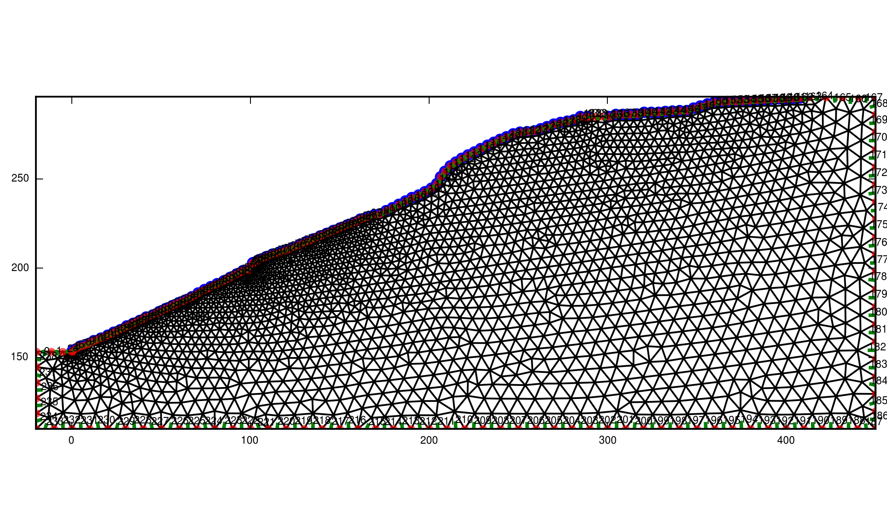
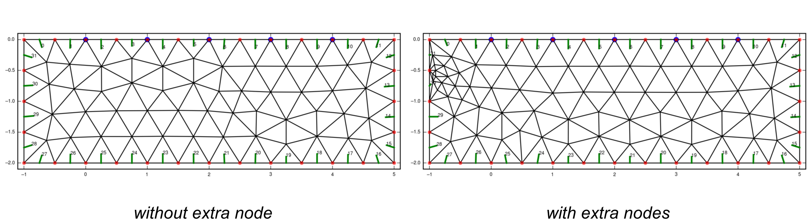

Grid creation
Checklist
make sure that electrodes are separated by at least one node
make sure that the electrodes are separated from the border by a few nodes
check the boundary conditions
check the coarseness of your grid (coarse for the first inversions, fine for presentation; if the grid is very large use fine cells near the electrodes and coarse cells near the boundaries)
Regular grids
At this point the CRTomo-tools do not provide a tool to generate regular grids.
There is an old grid generator available (Griev) - however compilation and usage has not been tested recently.
Irregular grids
The command to create irregular grids is:
$ cr_trig_create.py
You need to create the files described down below first (required files:
electrodes.dat, boundaries.dat) to give the program the information
about the grid it shall create. Use the -h command to see the possible
options.
The program will create a subdirectory with a unique name and store the final grid files (and all intermediate files) in there. The output directory is given in the last line of output.
Alternatively, an output directory can be provided as the first parameter:
$ cr_trig_create.py [output_directory]
At least one node should separate two electrodes. One way to ensure this is to
set the characteristic length to about half the minimal electrode distance in
the grid. You can specify the characteristic length in the char_length.dat.
Another one is to use the -m switch, which ensures that at least the given
number of nodes separates successive electrodes. This works only for grids with
surface electrodes. Otherwise it is not clear which nodes lie between any two
electrodes. Also, the algorithm does not add nodes before and after the first
and last electrodes, respectively. Therefore, make sure to add enough boundary
nodes at the grid edges to prevent large modelling errors. You specify you
boundaries in the boundaries.dat.
Due to the simple nature of the algorithm, only odd numbers should be used for -m. Even numbers usually result in non-equidistant nodes.
Below the final grids generated by the following commands are shown:
$ echo 4 > char_length.dat
$ cr_trig_create.py -m 0 grid_m0
$ cr_trig_create.py -m 1 grid_m1
$ cr_trig_create.py -m 2 grid_m2
$ cr_trig_create.py -m 3 grid_m3

Best practices
check the output for red warnings from GMSH. This is always an indicator for a non-functional grid.
at the end of the grid creation
CutMcKis called to create an optimal node arrangement within the grid. Check this output for the stringzero nodes found
This also is an indicator for problems.
Use an electrode characteristic length of half the minimal electrode distance. This ensures that at least two elements are located between any two electrodes. Use the boundary characteristic length (larger values) to increase the element size far away from the electrodes.
Alternatively, use the -m switch to add additional nodes between the electrodes.
a plot of the grid is created in the output directory, check it.
use Griev (or some other grid viewer) to inspect the grid, especially at the electrodes.
grid cells should not have steep angles, as this decreases the FE solution quality.
make sure that no electrodes are located on any edge nodes of the grid. This drastically reduces modelling accuracy.
for circular grids, the following code snippet can be of help:
#!/usr/bin/python # -*- coding: utf-8 -*- """ Created on Tue Apr 21 15:26:22 2015 @author: stamm, mweigand """ import math import numpy as np def get_points(R, points): p = [] n = int(points) for i in reversed(range(0, n)): phi = 2 * np.pi / n * i x = R * math.cos(phi) y = R * math.sin(phi) p.append((x, y)) # print("%4.4f \t %4.4f" % (x, y)) return p if __name__ == '__main__': # radius = raw_input("Bitte Radius aingeben: ") # R = float(radius) R = 0.4 # [m] electrodes = get_points(R, 24) boundaries = [x + (12, ) for x in get_points(R, 48)] np.savetxt('electrodes.dat', np.array(electrodes)) np.savetxt('boundaries.dat', np.array(boundaries))
electrodes.dat
(X,Y) coordinates of all electrodes. Each electrode in one line:
24.0000 -34.0000
24.0000 -35.0000
24.0000 -36.0000
The line number corresponds to the electrode number in the final grid.
Warning
The -m switch can only work if the electrodes are arranged in successive order, i.e. either clockwise or counterclockwise. If other electrode arrangements are used, add all required nodes directly to boundaries.dat (position must be computed by other means, in this case).
boundaries.dat
(X,Y) coordinates of the nodes comprising the boundaries of the grid. If electrodes lie on the surface, also specify them in the boundaries.dat file. Doublets will be automatically removed.
Note
Specify the boundary elements clockwise! Anything else will lead to problems, either in the grid generation, or the modelling/inversion runs.
The third column denotes the boundary element type of the boundary described by the node and the next node. The last node denotes the boundary type of the element from the last to the first node.
-1.0000 1.7700 12
1.0000 1.7100 12
3.0000 1.5100 12
5.0000 1.4300 12
Note
Make sure to first write down the number 12 (neumann) boundaries, and then the number 11 (mixed) boundaries. This should prevent most problems with the grids.
char_length.dat (optional)
The file is expected to have either 1 or 4 entries/lines with characteristic lengths > 0 (floats). If only one value is encountered, it is used for all four entities. If four values are encountered, they are assigned, in order, to:
electrode nodes
boundary nodes
nodes from extra lines
nodes from extra nodes
Note that in case one node belongs to multiple entities, the smallest characteristic length will be used.
If four values are used and the electrode length is negative, then the electrode positions will be read in (todo: we open the electrode.dat file two times here…) and the minimal distance between all electrodes will be multiplied by the absolute value of the imported value, and used as the characteristic length:
The function scipy.spatial.distance.pdist is used to compute the global
minimum distance between any two electrodes.
It is advisable to only use values in the range [-1, 0) for the automatic char length option.
The characteristic length is the desired element size around a given node. However, if the distance between two nodes is smaller than the characteristic length, then this distances determines the given element cell. This behavior has the consequence that large characteristic lengths can lead to inhomogeneous cell sizes, and therefore reduce to overall-element number. Elements clustered around the nodes will then still have an acceptable size.
Default value is 1.
In the following example you see the char_length.dat and the created grid.
Note that the cells are coarser at the boarders but still fine at the
electrodes. This is usefull, when using such a big grid.
5.0
10.0
5.0
5.0
{kind=link}

extra_lines.dat (optional)
Extra lines (i.e. to model layer interfaces or water levels) can be included in
the grid using the file extra_lines.dat. Each line holds the start (x1,y1)
and end (x2,y2) point of this line.
x1 y1 x2 y2
0.0 -10.0 26.0 -10.0
Start/end points lying on the boundaries must be included in the
boundaries.dat file.
extra_nodes.dat (optional)
Extra nodes to be included in the grid (e.g. to refine the mesh at certain positions) can be specified in this file, one point (x, y) per line:
0.0 0.0
10.0 -26.0
Extra points that lie on the boundaries of the mesh must be included into the
boundary.dat file!
Note
Be careful with placing extra nodes in the vicinity of boundaries. This can easily lead to errors in the grid generation. Sometimes it helps to add a few more nodes in the direct vicinity of this one node.
Note
In the vicinity of boundaries, or other constraining elements, the characteristic length can play an important role in preventing a successful grid generation. If the characteristic length is too large, elements cannot be created that include the extra nodes. Try reducing the char. length in those cases.
{kind=link}

gmsh_commands.dat (optional)
If this file exists, the content will be appended to the commands.geo file used to create the grid (i.e. GMSH commands should be used).
Further Reading:
Check and sort boundary polygon:
- for an explanation of the characteristic length, see: